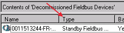
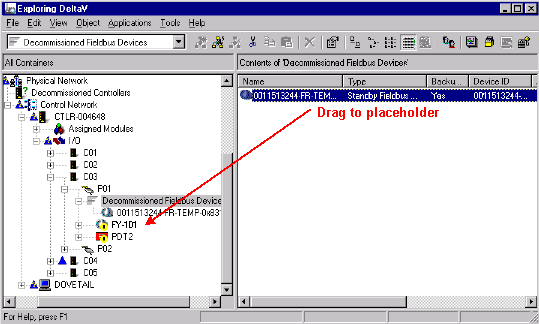

Commission with DeltaV Explorer and the device commissioning wizard
- Attach the device to the segment.
- Click Start > DeltaV Engineering > DeltaV Explorer to open the DeltaV Explorer.
- The device should appear under Decommissioned fieldbus Devices. It may take a minute for the device to appear. Tip: Press the F5 key to update the list.
-
The device must be in the Standby state before you can commission
it. To determine if a device is in Standby, select Decommissioned Devices,
click
View > Details
from the menu bar, and be sure that the words "Standby fieldbus Device" appear
under Type in the right pane.

If the device is not in Standby, right-click the device in the right pane and select Standby. It may take a minute or so for the device to transition to Standby.
- Now be sure that the decommissioned device's properties, Device Type, Manufacturer, and Device Revision, match the placeholder properties. To check the properties, right-click the item and select Properties. If necessary, edit the placeholder properties to match the device properties.
-
Select the device from the Decommissioned fieldbus Devices list
and drag it to the placeholder.

The Device Commissioning Wizard - Start opens.
- Read the information on the Device Commissioning Wizard - Start dialog and click Next to open the Device Commissioning Wizard – Reconcile Device dialog. Use this dialog to reconcile any differences between the placeholder and the device.
- Click the Reconcile Device button. (If you do not click this button and click Next instead, the parameters in the device will remain as they are and will overwrite the parameters in the placeholder when you commission the device.) The Reconcile Device dialog shows two sets of fieldbus device configuration parameters: parameters in the placeholder and parameters in the device. This dialog allows you to transfer parameters from a placeholder to a device and edit parameters in the device. Click the Help button and read about reconciling device parameters. Click the Transducer block in the upper left corner of the Reconcile dialog to reconcile the transducer block parameters. Read the device documentation before reconciling transducer block parameters.
- Click OK when you are finished reconciling parameters and then click Finish to commission the device.
Related information